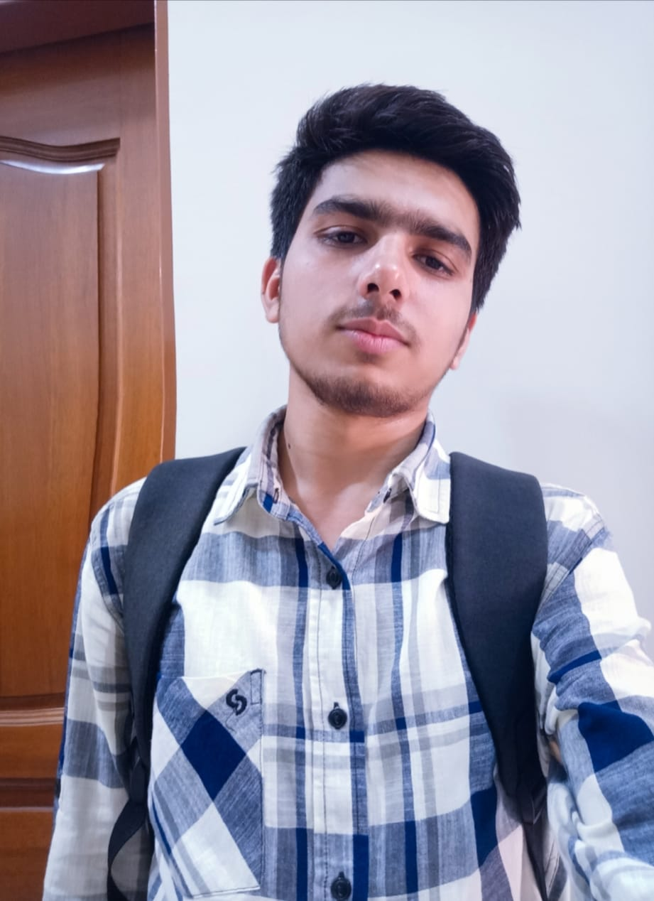

go back
This is awais. I have done bechelor's in IT. Now I'm doing master's in CS.

Education
Matriculation from Govt. high school Shahdara Lahore and FSc. from GICCL.
BS(2-year's) from PUCIT.
Master's in CS from Virtual University
Experience
CS teacher in Star's College Lahore.
Dispacther job in a BPO MindBridge-Ferotek.
Web-Developer at some place.
Skills
I am good English literature. I scored high at Toefl/Ielts.
Coding: Python, C++, JaveScript, Java
Logical-thinking: Problem solver.
Teamwork